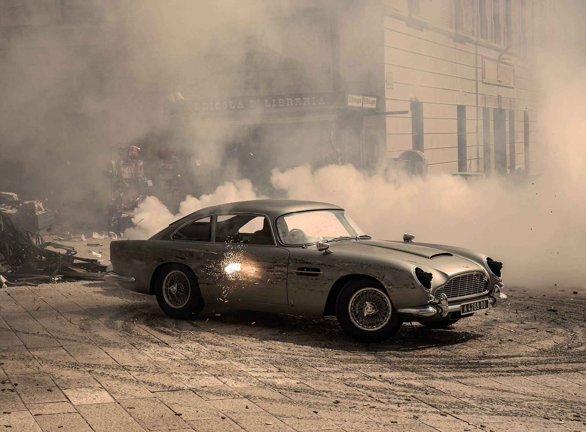

The Aston Martin DB5, first unveiled in 1963 as the successor to the DB4, is perhaps the most famous car ever built by the brand. Designed as a refined grand tourer rather than an all-out sports car, it combined hand-built craftsmanship, elegant Italian styling, and British engineering in a way that captured the imagination of enthusiasts across the world. Produced in limited numbers between 1963 and 1965, it has since become an icon of both automotive design and popular culture.

The DB5’s body was crafted using the Superleggera method by Carrozzeria Touring of Milan, which gave it a light yet rigid structure wrapped in beautifully proportioned aluminum panels. Its long bonnet, swept-back cabin, and fluid rear end created a silhouette that was at once graceful and purposeful. The oval grille, covered headlamps, and subtle chrome accents provided the finishing touches to what many consider to be one of the most elegant automotive designs of the 1960s. More than just styling, it projected the perfect balance of restraint and sophistication — a car for discerning drivers who valued both performance and presence.
Beneath the bonnet lay a 4.0-liter straight-six engine with twin overhead camshafts and triple SU carburetors, producing around 282 horsepower in standard form and up to 325 horsepower in the uprated Vantage specification. Paired with a five-speed ZF manual gearbox (or an optional automatic), the DB5 could accelerate from 0–60 mph in just over 8 seconds — brisk for its era — and reach a top speed of approximately 145 mph. Four-wheel disc brakes, independent front suspension, and a finely tuned chassis made it as capable on twisty mountain roads as it was cruising effortlessly along the motorway.
Behind the wheel of a DB5, every journey feels special. The straight-six engine delivers power with a smooth, cultured note, while the steering and suspension reward calm, confident driving. It’s not about lap times — it’s about savoring the road, surrounded by leather, wood, and timeless style. The DB5 turns every drive into an occasion, reminding you that elegance can be just as thrilling as speed.
What truly catapulted the DB5 into legend, however, was its starring role in the James Bond film Goldfinger (1964). Outfitted with gadgets such as revolving license plates, machine guns, and the now-famous ejector seat, the DB5 became inseparable from 007’s image. Its return in later Bond films — from Thunderball to Skyfall and No Time To Die — only cemented its reputation as “the most famous car in the world.” Beyond its screen presence, the DB5 embodied the qualities associated with Bond himself: elegance, sophistication, and a hint of danger.
The DB5 was produced in just over a thousand examples, making it rare and highly sought-after today. Its design influenced later Aston Martin models, including the DB6 and the modern-day DB9, which carried forward the spirit of effortless grand touring. Collectors prize the DB5 not only for its beauty and performance but also for its cultural significance — it represents the golden age of Aston Martin and the glamour of 1960s motoring. At auctions, DB5s command prices in the millions, a testament to their enduring desirability.